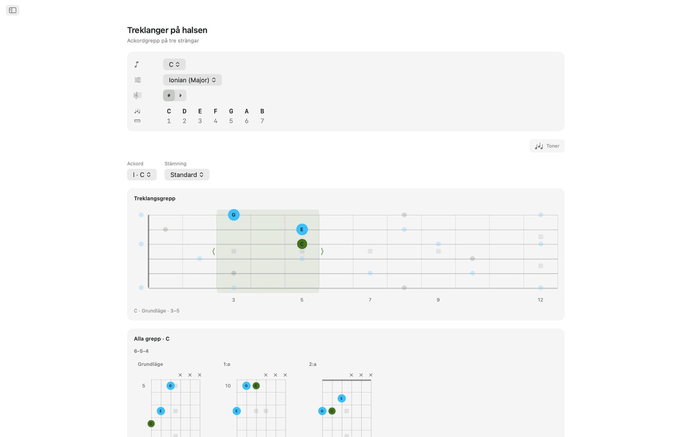
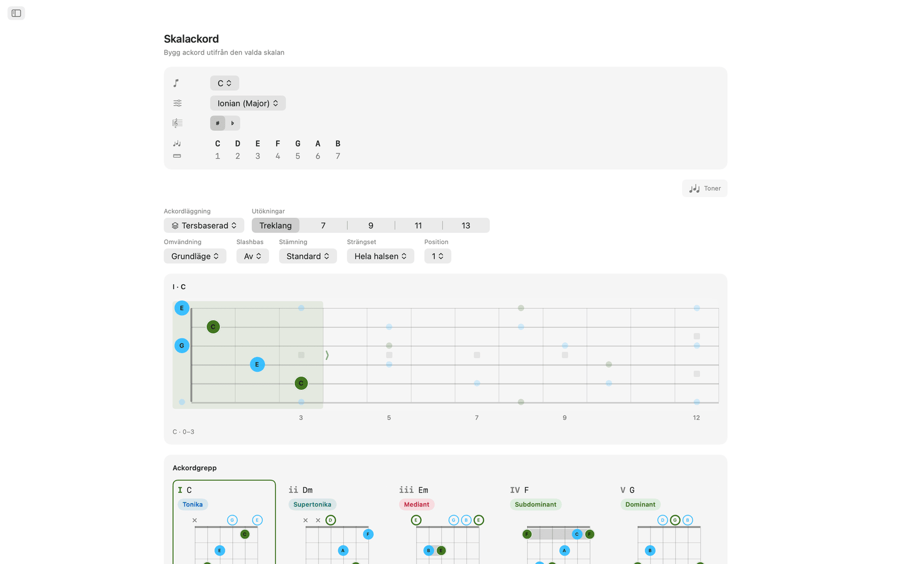
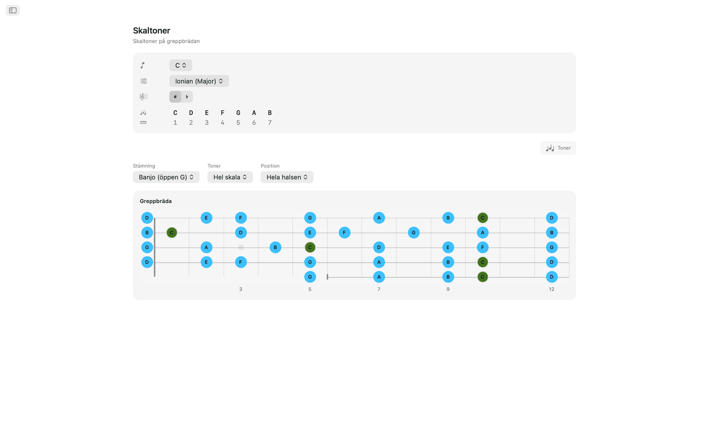
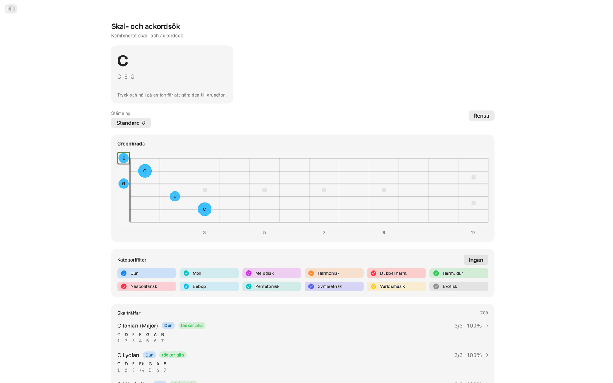
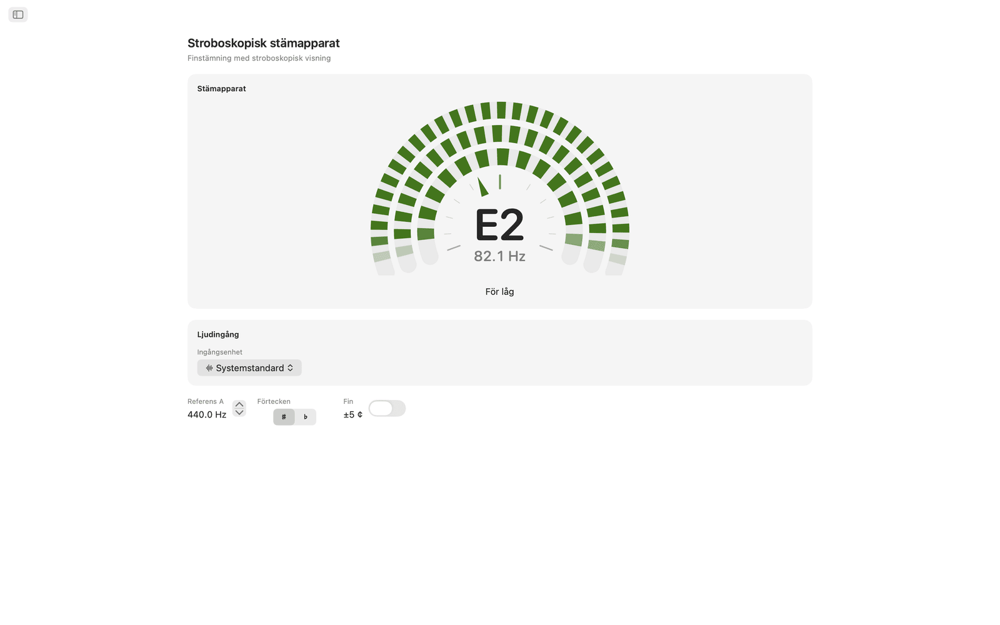
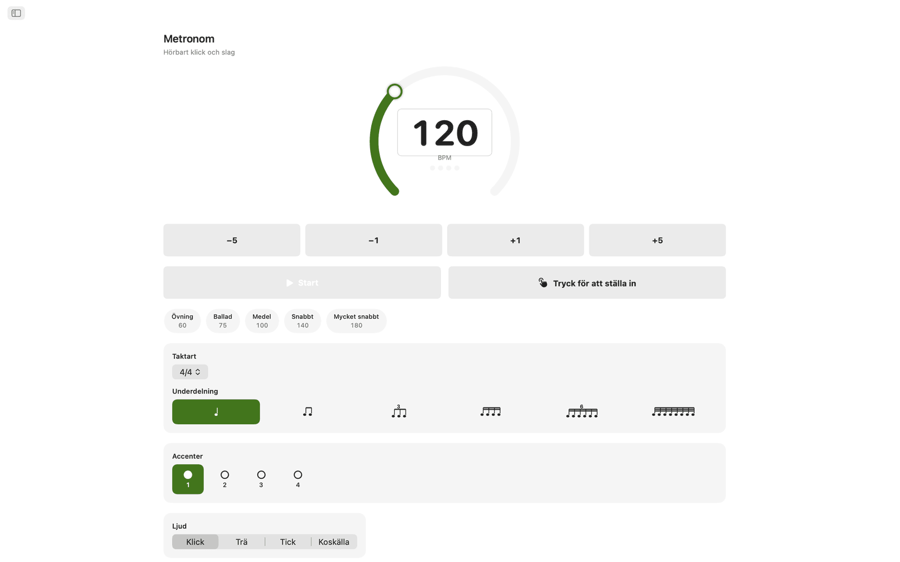
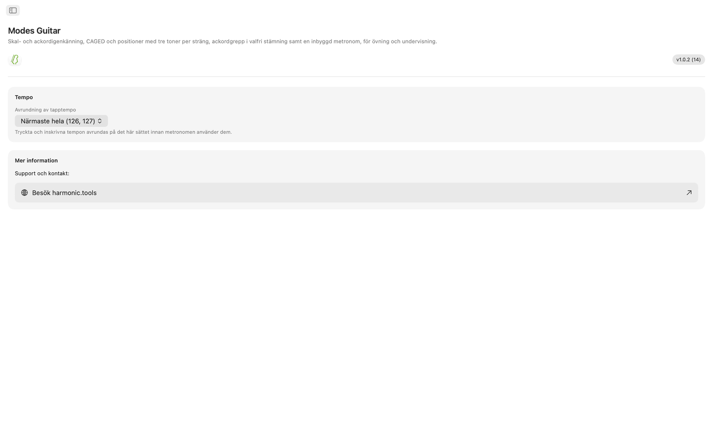

Modes Guitar för macOS
Modes Guitar är en app för greppbrädan till Mac. Klicka på de toner du greppar för att ta reda på vad du spelar, lägg ut valfri skala i CAGED- eller tre-toner-per-sträng-positioner, bläddra bland spelbara ackordgrepp i valfri stämning och öva mot en inbyggd metronom. Appen har sidofält och kan ligga bredvid din DAW eller ditt lektionsupplägg.
- Skal- och ackordsök direkt på halsen
- CAGED- och tre-toner-per-sträng-positioner
- Spelbara ackordgrepp i valfri stämning
- 20 stämningar, plus din egen stämning
- Stroboskopisk stämapparat med val av ljudgränssnitt och kanal
- Övningsmetronom och widgetar i Notiscenter
Skärmbilder
Ljusa och mörka skärmbilder som följer webbplatsens tema.









Funktioner
- Klicka på de toner du håller ned direkt på halsen så namnger Modes Guitar ackordet i realtid (dur, moll, förminskat, överstigande, utökat, suspenderat med mera) och rankar alla skalor som passar efter hur många av tonerna de täcker. Filtrera efter skalfamilj för att korta ned listan och hoppa sedan direkt till den skalans ackord.
- Välj en grundton och en skala så lyser alla skaltoner upp över halsen. Växla till CAGED-positioner eller tre-toner-per-sträng-lopp, dra en ruta upp och ned längs halsen för att byta position och begränsa tonerna till treklangen, septimackordet, pentatoniken eller hela skalan.
- Varje steg i skalan får spelbara ackordgrepp, med markeringar för öppna och dämpade strängar, barréindikatorer och en kolumn med bandnummer när greppet sitter högt upp på halsen. Stega genom positioner längs halsen, välj en omvändning eller tvinga in valfri skalton i basen för slashackord.
- Valfritt ackord i tonarten kan tas isär och sättas ihop igen på halsen. Varje tät ackordläggning visas i ett rutnät med diagram, grupperade efter strängset, i grundläge, första omvändning och andra omvändning. Välj ett diagram så visas det på greppbrädan med övriga ackordtoner runt omkring, och du kan dra greppet uppåt på halsen för att spela samma grepp i alla positioner.
- Det finns 20 stämningar: Standard, Drop D, Drop C, E♭-standard, DADGAD, öppen G, öppen D, sjusträngad, baryton, fyr- och femsträngad bas, ukulele, banjo (femsträngad, tenor och plektrum) och mandolin. Grepp, ackordgrepp och tonnamn räknas om för den stämning du väljer, och när du ändrar stämning behåller du fingersättningen så att du hör vad samma grepp blir. För en egen stämning väljer du 3 till 8 strängar och stämmer varje sträng på gehör, med valfri förinställning som utgångspunkt.
- Stämapparaten är stroboskopisk. Spela en sträng så driver tre ringar av segment åt ena hållet när du är för låg och åt andra hållet när du är för hög, och står stilla i samma stund du träffar rätt tonhöjd, vilket visar mycket finare skillnader än en visare kan. Den är helt kromatisk och namnger vad du än spelar, öppen sträng eller tryckt ton, i valfri stämning, så en gitarr, bas, ukulele, banjo eller mandolin stäms från samma urtavla. Du kan ställa in referens-A var som helst från 415 till 466 Hz, slå på Finskala för att läsa av till en tiondels cent och visa förtecken som kors eller b. På Mac väljer du också vilket ljudgränssnitt och vilken ingångskanal den lyssnar på, så att en gitarr som är ansluten till ett gränssnitt stäms direkt från kontakten. Allt analyseras på enheten och ingenting spelas in.
- Övningsmetronomen har taktarter, underdelningar, swing, accenter per slag, fyra klickljud, justerbar volym och haptik, plus snabba tempon och sparade förinställningar för de partier du övar på.
- Ha metronomen i Notiscenter och starta eller stoppa den utan att byta app. Det finns också en Dagens skala och ett Dagens ackord att jobba med.
På Mac
- Allt körs på enheten: inget konto, inga annonser, ingen spårning
- Ingen internetanslutning krävs
- Ljust och mörkt utseende genomgående
- En app med sidofält som ligger bredvid din DAW eller ditt lektionsupplägg
- Översatt till 22 språk
Tillgänglighet
Fungerar med VoiceOver och Röststyrning och kan användas från tangentbordet, med piltangenter och mellanslag.
Modes Guitar är gratis att prova i 7 dagar. Efter provperioden köper du full åtkomst en gång, utan prenumeration.
Referens för greppbräda och stämning
Referens för de stämningar, positioner, ackordverktyg, stämapparat och metronomfunktioner som finns i appen.
Stämningar
Grepp, ackordgrepp och tonnamn räknas om för den stämning du väljer. När du ändrar stämning behåller du fingersättningen, så att du hör vad samma grepp blir. Tonerna listas från lägsta till högsta sträng.
| Stämning | Toner (låg → hög) | Strängar |
|---|---|---|
| Standard | E A D G B E | 6 |
| Drop D | D A D G B E | 6 |
| Drop C | C G C F A D | 6 |
| E♭-standard | E♭ A♭ D♭ G♭ B♭ E♭ | 6 |
| DADGAD | D A D G A D | 6 |
| Öppen G | D G D G B D | 6 |
| Öppen D | D A D F♯ A D | 6 |
| Sjusträngad | B E A D G B E | 7 |
| Baryton | B E A D F♯ B | 6 |
| Bas (fyrsträngad) | E A D G | 4 |
| Bas (femsträngad) | B E A D G | 5 |
| Ukulele | G C E A | 4 |
| Banjo (öppen G) | G D G B D | 5 |
| Banjo (Double C) | G C G C D | 5 |
| Banjo (Sawmill) | G D G C D | 5 |
| Banjo (öppen D) | F♯ D F♯ A D | 5 |
| Banjo (tenor) | C G D A | 4 |
| Banjo (irländsk tenor) | G D A E | 4 |
| Banjo (plektrum) | C G B D | 4 |
| Mandolin | G D A E | 4 |
Du kan också bygga en egen stämning: välj 3 till 8 strängar och stäm varje sträng på gehör, med valfri förinställning som utgångspunkt.
Positioner på greppbrädan
Lägg ut valfri skala över halsen och ändra hur mycket av den du ser. Dra en ruta upp och ned längs halsen för att byta position.
Positionssystem
Tonurval
Ackordgrepp
Varje steg i skalan får spelbara grepp i den aktuella stämningen.
- Spelbara grepp har markeringar för öppna och dämpade strängar, barréindikatorer och en kolumn med bandnummer när greppet sitter högt upp på halsen.
- Du kan stega genom greppen längs halsen.
- Med omvändningar väljer du vilken ackordton som ligger i basen.
- För slashackord kan du tvinga in valfri skalton i basen.
Treklanger på halsen
Ta isär valfritt ackord i tonarten och sätt ihop det igen på halsen.
Stroboskopisk stämapparat
En stroboskopisk stämapparat för alla instrument i valfri stämning. Analyseras på enheten och spelas aldrig in.
Övningsmetronom
En komplett metronom för de partier du övar på.
Widgetar
Nå metronomen, Dagens skala och Dagens ackord utan att byta app.